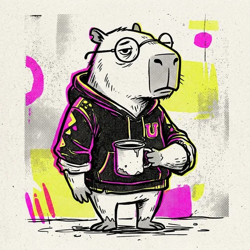

QPC
Sistemas
● VIVO
ITINERARIO
Camino Óptimo
8 cuatrimestres restantes estimados
★ SI APROBÁS LO QUE CURSÁS:
Desbloqueo inmediato
[6] Algoritmos y Estructuras
(Habilitada)
Itinerario sugerido
1º CUAT. 2026 (ACTUAL)
16 hs semanales
Análisis Matemático I
Atrasa 14 materias
Álgebra y Geometría
Atrasa 10 materias
2º CUAT. 2026
18 hs semanales
Algoritmos y Estructura
Atrasa 12 materias
Atajos y Excepciones
1. ADELANTO DE NIVEL
Excepción último año
Faltan 118 hs para activar
2. CONDICIONALIDAD
Cursado condicional
0 candidatas ahora (aplica en 4º/5º)
3. COMISIÓN COMPARTIDA
11 materias básicas cruzadas
Álgebra, Análisis, Física, etc.
Créditos de Electivas
0 de 24 hs totales aprobadas
3º Año:
0 / 6 hs
4º Año:
0 / 8 hs
5º Año:
0 / 10 hs
HOY
CARRERA
CAMINO
AGENDA